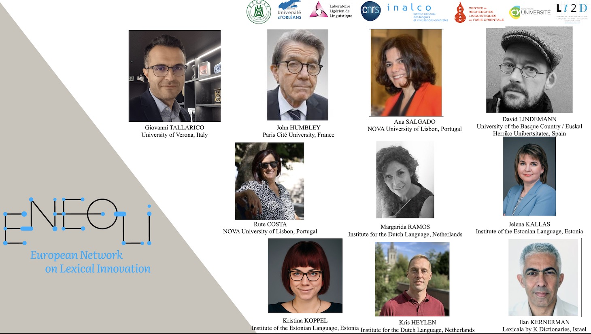

×
6. International seminar

Guest Speaker : Alain POLGUÈRE (University of Lorraine, CNRS, ATILF, France) See the announcement
Topic : Lexicography of lexical networks: why and how
Language : English
Date : 10 October 2025
Time : 16 : 00-17h30 (Beijing time) / 10h -11h30 (Paris time)
Venue : University of Huazhongnongye, China & Online
Chair : Yvon Keromnes (University of Lorraine, CNRS, ATILF, France)
Organizers : GENG Yundong 耿云冬 & CHEN Lian陈恋 & DAO Huy-Linh 匋輝靈
This international seminar is funded by the project “Local Innovations and International Advances in Intelligent Lexicography” (2025-2026) (Project Number: H20250649), supported by the "National Program for Experts in Scientific and Technological Innovation" of the People's Republic of China and School of Foreign Languages, Huazhong University, China
Registration
×
5. International seminar

Guest Speaker : (in order of appearance): Giovanni TALLARICO, John HUMBLEY, Ana SALGADO, David LINDEMANN, Rute COSTA, Margarida RAMOS, Jelena KALLAS, Kristina KOPPEL, Kris HEYLEN, Ilan KERNERMAN See the announcement
Topic : Multilingual Lexicography in the ENEOLI Network: Challenges and Collaborative Solutions
Language : English
Date : 28 Mars/2025
Time : 17 : 00-18h30 (Beijing time) / 10h -11h30 (Paris time)
Venue : University of Huazhongnongye, China & Online
Organizers : GENG Yundong 耿云冬 & CHEN Lian 陈恋 & DAO Huy-Linh
Registration
This intrnational seminar is funded by International Project "中欧数字辞书创新发展路径比较及对策研究 [Chinese and European Digital Lexicography]" (2023-2024) - (Project Number: G2023157010L) - funded by the Ministry of Science & Technology of the People's Republic of China and Huazhong University, China.
×
4. International seminar

Guest Speaker : JAKUBÍČEK Miloš Sketch Engine - Lexical Computing CZ s.r.o. & Masaryk University in Brno See the announcement
Topic : Post-editing lexicography
Language : English
Date : 15/11/2024
Time : 17:00-18:30 (Beijing time) / 10:00-11:30 (Paris time)
Venue : Online (France and China)
Organizers : GENG Yundong 耿云冬 & CHEN Lian 陈恋 & DAO Huylinh
Registration
Abstract: In the talk I will review the development of methods for automating dictionary production from corpus data.
I will start with a brief overview of the "historical" corpus revolutions (as identified e.g. by Rundell, 2008) and their
implications on the lexicographic process, with the main part of the talk focusing on the most recent change leading to a lexicographic workflow called “ Post-editing lexicography".
I will discuss in detail to what extent this is a revolution or evolution, how individual parts of the lexicographic workflow are affected and what are the main implications on the lexicographic business process.
Finally, I will review these changes in the light of the availability of large language models and general AI development.
This intrnational seminar is funded by International Project "中欧数字辞书创新发展路径比较及对策研究 [Chinese and European Digital Lexicography]" (2023-2024) (Project Number: G2023157010L) - funded by the Ministry of Science & Technology of the People's Republic of China and Huazhong University, China.
×
3. International seminar

Guest Speaker : Professor Jean PRUVOST (LT2D-Jean Pruvost Center, Cergy Paris University) See the announcement
Topic : « LA LEXICOGRAPHIE FRANÇAISE :
DES ORIGINES JUSQU’AUX USAGES NUMÉRIQUES » [FRENCH LEXICOGRAPHY: FROM THE ORIGINS TO DIGITAL USES].
Language : French
Date : 08/11/2024
Time : 16:30-18:00 (Beijing time) / 9:30-11:00 (Paris time)
Venue : University of Huazhongnongye, China & Online
Organizer : GENG Yundong
Chair : CHEN Lian 陈恋
Registration
This intrnational seminar is funded by International Project "中欧数字辞书创新发展路径比较及对策研究 [Chinese and European Digital Lexicography]" (2023-2024) (Project Number: G2023157010L) - funded by the Ministry of Science & Technology of the People's Republic of China and Huazhong University, China.
×
2. International seminar
Professor Sven TARP (School of Communication and Culture - CenterCenter for Lexicography School of Communication and Culture - Center for Lexicography)
Venue Onsite : University of Huazhongnongye, China
×
1. International seminar
Professor GOUWS Rufus H.(Stellenbosch University)
Venue Onsite : University of Huazhongnongye, China